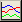
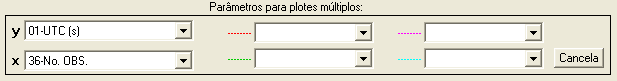
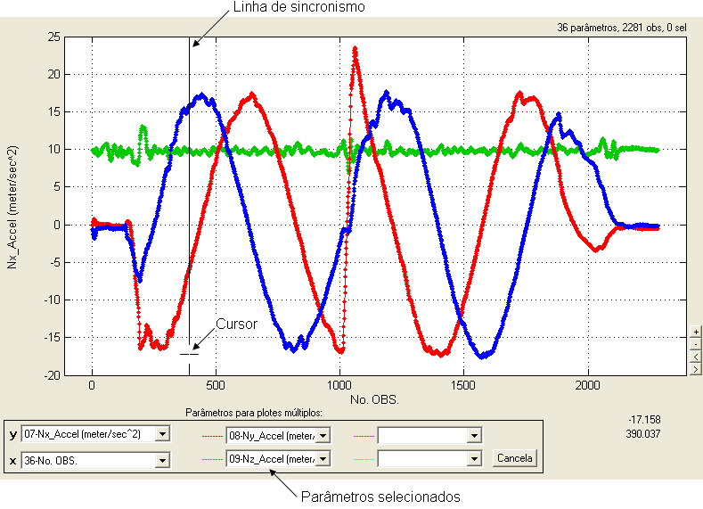
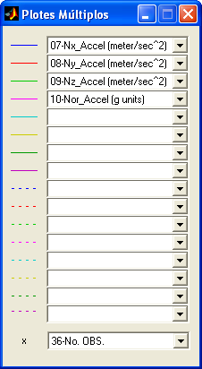
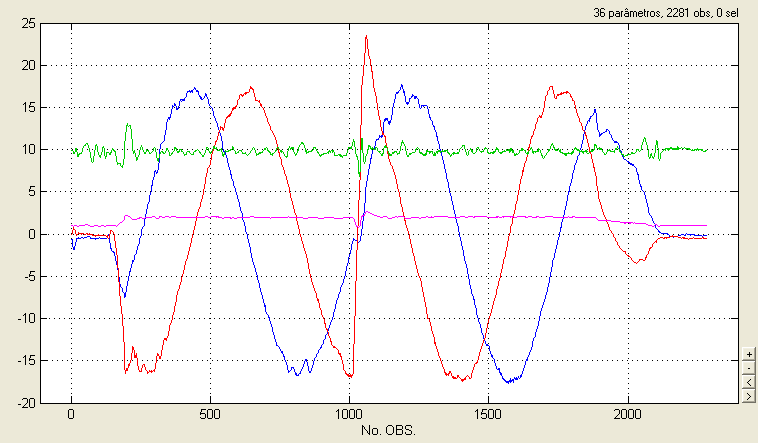
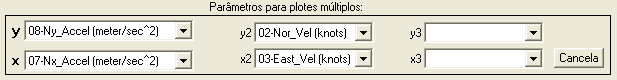
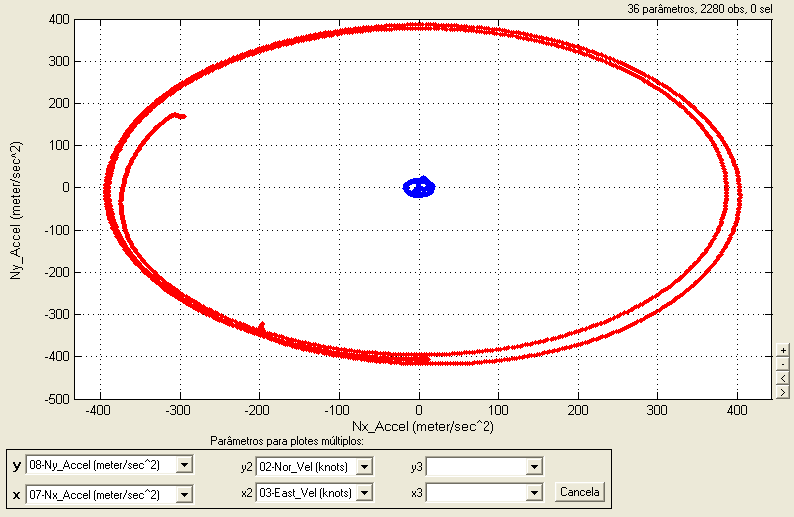

| Menu Dados |
|
Plotes
Múltiplos
Esse grupo de funções permite visualizar o plote de vários parâmetros no mesmo gráfico.
Os parâmetros adicionais para plotagem podem ser memorizados pelo R_DAT caso a opção "Lembrar parâmetros de exibição múltipla" esteja selecionada.
As opções
disponíveis são:
- Até 5
plotes com mesma
abscissa
- Até
16 plotes com mesma
abscissa
- Até 3
plotes com abscissas
diferentes
Clique no menu “Dados ► Plotes múltiplos ... ► [opção
desejada]”.
Até 5 Plotes
com Mesma Abscissa
Essa função
permite visualizar os plotes
de até 5 parâmetros no
mesmo gráfico.
Clique no menu “Dados ► Plotes múltiplos ... ► Até 5 com
mesma abscissa” ou
clique no botão 
A Caixa de
Diálogo solicitará que o usuário indique os
parâmetros para plotagem:

● No campo “x”,
selecione a abscissa, que será comum a
todos os parâmetros.
● No campo “y”,
selecione o parâmetro principal.
● Nos demais
campos, selecione até 4
parâmetros secundários. A opção em branco ocultará o respectivo plote.
Os estilos dos plotes (cores,
linhas e marcadores) podem ser alterados pela função “Editar
tipos de linhas”.
É possível
apresentar uma linha vertical para facilitar o
sincronismo visual dos plotes,
marcando a opção “Exibir
linha de sincronismo”.

Enquanto a
função estiver ativada, não será possível
realizar as operações do R_DAT. Clique no botão “Cancela” para
desativar a
função.
Até 16 Plotes com Mesma
Abscissa
Essa função
permite visualizar os plotes
de até 16 parâmetros no mesmo gráfico.
Clique no menu “Dados ► Plotes múltiplos ... ► Até 16
com mesma abscissa”.
Será apresentada uma janela
auxiliar para que o usuário indique os parâmetros desejados:

● No campo “x”,
selecione a abscissa, que será comum a
todos os parâmetros.
● Nos demais campos, selecione
até 16 parâmetros. A opção em branco ocultará o respectivo plote.
Os estilos dos plotes (cor e tipo
de linha) são apresentados à esquerda de cada campo e não podem ser
alterados.
É possível
apresentar uma linha vertical para facilitar o
sincronismo visual dos plotes,
marcando a opção “Exibir
linha de sincronismo”.

Enquanto a
função estiver ativada, não será possível
realizar as operações do R_DAT. Feche a janela auxiliar para desativar
a
função.
Até 3 Plotes
com Abscissas Diferentes
Essa função
permite visualizar os plotes
de até 3 parâmetros no
mesmo gráfico, com abscissas
diferentes.
Clique no menu “Dados ► Plotes múltiplos ... ► Até 3 com
abscissas
diferentes”.
A Caixa de
Diálogo solicitará que o usuário indique os
parâmetros para plotagem:

● No campo “x”,
selecione a abscissa do plote
principal.
● No campo “y”,
selecione o parâmetro principal.
● Nos campos
“x2” e “x3”, selecione
as abscissas dos plotes
secundários.
● Nos campos
“y2” e “y3”, selecione
os parâmetros secundários.
Os estilos dos plotes (cores,
linhas e marcadores) podem ser alterados pela função “Editar
tipos de linhas”.

Enquanto a
função estiver ativada, não será possível
realizar as operações do R_DAT. Clique no botão “Cancela” para
desativar a
função.
| |
Inverter
seleção |
Gráficos
múltiplos |
|